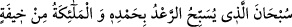
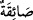

Âlimler, “er-Ra‘d (gök gürültüsü)” hakkında ihtilâf ettiler. Bu konuda mûteber olan
görüş, “Ra‘d”ın Allah’ın celâlî heybetinin nûrundan yarattığı bir meleğin adı
olduğudur. “Ra‘d”, yine bu meleğin son derece şiddetli olan sesidir. Deve sâhibinin
çıkardığı bir sesle deve sürüsünü yönlendirmesi gibi bu melek de sesiyle bulutları
yönlendirir. Bu melek tesbih ettiği zaman melekler de dahil olmak üzere bütün
yaratılmışların içini bir korku kaplar.
Fakir (Bursevî) der ki: Herhalde ra‘d mezkûr meleğin sesidir. Tesbihin onun sesine
isnad edilmesi, onda bulunan kemâl sebebiyledir.
“Melekler de O’nun heybetinden dolayı tesbih ederler.” Bu ifade, genel (âm) bir
ifadenin özel (hâs) bir ifadeye atfı kabîlindendir. Yâni melekler de Allah’ın
korkusundan ve haşyetinden, heybet ve celâlinden ötürü tesbih ederler. Gök
gürültüsünün tesbîhi, duyulan sesinden ibarettir. İşte o Allah’ı tesbih ettiği zaman tesbih
ederek sesini yükseltmeyen hiçbir melek kalmaz. Ardından yağmur damlaları yağmaya
başlar.
Melekler de Allah’tan korkarlar. Ancak onların korkusu, insanoğlunun korkusuna
benzemez. Çünkü onlar ne sağlarındakini ne de sollarındakini tanırlar. Ne yemek ne
içmek ne de bir şey onları Allah’a ibâdetten alıkoyar.
İbn Abbas (r.anhümâ)’nın şöyle dediği rivâyet edilmiştir: “Gök gürültüsünü işitip de:
“__WORD__ Gök gürültüsünün kendisini hamd ile,
meleklerin de heybetinden tesbih ettikleri Allah her türlü eksiklikten münezzehtir, O
her şeye kâdirdir!” diyen ve bu esnâda kendisini yıldırım çarpan herkesin diyeti
üzerime borç olsun.”
“Onlar,” o kâfirler, bunca delil de ortadayken “Allah hakkında mücâdele edip
dururken.” Buradaki mücâdele, ayrılıp uzaklaşma mânâsındaki cedele dayalı
hasımlıkta gösterilen ısrarcılıktır. Allah Teâlâ’yı büyük, tek ve son derece güçlü
olmakla tavsif eden O’nun peygamberini yalancı sayıp dururken “O, yıldırımlar
gönderip onlarla” çarpmasını “dilediğini çarpar” ve helak eder.
(yıldırım), bulutta oluşarak gökten düşen dumansız bir ateştir. Yıldırım bu
âlemdeki ateşlerin en güçlüsüdür. Çünkü bulutlardan yeryüzüne düştüğünde bazen
denizin içine kadar sirâyet eder ve suyun altındaki balıkları bile yakar.
İbn Abbas (r.anhümâ)’dan rivâyet edildiğine göre yahûdiler Hz. Peygamber (a.s.)’a
ra‘d’ın ne olduğunu sordular. O da şöyle cevap verdi:
–“Ra‘d, meleklerden bir melek olup yanında bulutları Allah’ın dilediği yere
götürmesine yarayan ateşten kamçılar vardır.”
Yahûdiler:
–“Peki, duyulan o ses nedir?” diye sorunca şöyle buyurdu:
–“Ses, meleğin bulutları başka yöne gitmekten alıkoyan sesidir. Bu sesle melek,